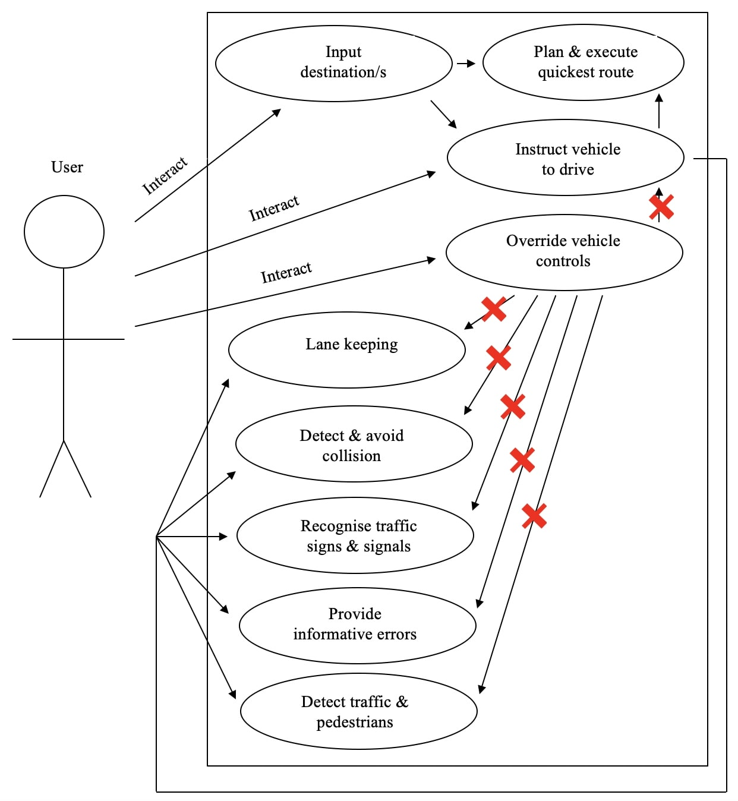

e-Portfolio Weekly Activities
Unit 1 Activities
Di Silvestro & Nadir (2021) Article ReviewIn the article by Di Silvestro & Nadir (2021), I identified one aspect that I unexpected. This aspect was the 3rd theme of the article; “Students found new personal strengths.”. This was unexpected because my understanding of why one should develop an e-portfolio, was skewed. Initially, my understanding of an e-portfolio was that it is simply an evidence of work completed whilst studying. Although, whilst this is the case, it should be understood that it is also a space in which the imperfections of one’s work and the learning process involved should also be documented. The primary purpose of developing an e-portfolio can therefore be redefined as a method to foster reflective and deeper learning.
Classes & Objects: Codio Lab
class Person:
def __init__(self,first,last,weight,height):
self.first_name = first
self.last_name = last
self.weight_in_kg = weight
self.height_in_cm = height
p1 = Person('Liam','Willson',80,90)
p2 = Person('Narelle','Willson',50,60)
p3 = Person('Jemma','Willson',50,65)
p4 = Person('Chanel','Willson',60,75)
p5 = Person('Gail','Shorthouse',50,60)
people = [p1,p2,p3,p4,p5]
for i in people:
print(i.first_name)
Unit 2 Preparation Activities
Autonomous Car User Pen PortraitMost likely has passed driving exam. Has driver license. Above the age of 16 at least. Likely legal age in country where driving. Either male or female. Can speak any language. Able bodied or non-able bodied. Of any possible height. Of varying education levels. Of varying levels of life experience. Of varying levels of tech experience/familiarity. Likely of stable mental health. Dislikes or likes the driving experience. Of differing attitude each day. Socioeconomically able to afford a car (&/or autonomous car). Likely supportive of or indifferent to new technologies. Seeking the ideal driving experience.
Use Case Model: User Interaction With Autonomous Car Software

Unit 1-3 Collaborative Discussion
Unit 1 Initial PostPadhy et al. (2018) prioritise 11 identified reusable assets associated with software development. These reusable assets have been identified from analysis of relevant and appropriate articles. Although, the ranking of these reusable assets is seemingly subjective.
The following describes how I would reorder their ranking. I believe this ranking values logical progression as it relates to software development. Hence, more value is unintentionally given to reusable assets related to software planning and design. This is meaningful. Potentially, a more objective approach.
- Requirement analysis (RA): Fundamental in any software project, is the system to be utilised capable and appropriate for this development. Does technology allow this development?
- Knowledge requirement (KR): Also fundamental, is the required development capability present. Experience allows progression.
- Models in the project (MP): Planning the objective and purpose of software is essential and perhaps the product of previous developments.
- Design patterns (DP): Does the design of the project allow foresight and efficient development?
- Test cases/test design (TCTD): If testing of the software will be ambiguous, then quality software cannot be the result.
- Architecture driven approach (ADP): If overall structure of this project is the product of previous development, does this provide foresight to predict future likely issues.
- Modules in the program (MIP): Now, the fundamentals of any in-development or built project: the components of it. Discussion continued below.
Reference:
Padhy, N., Satapathy, S., & Singh, R.P. (2018) 'State-of-the-Art Object-Oriented Metrics and Its Reusability: A Decade Review', in: Satapathy S., Bhateja V., Das S. (eds) Smart Computing and Informatics. Smart Innovation, Systems and Technologies. 77. Springer.
Unit 2 Peer Responses
Reply 1
Thanks for the post.
I think your approach has prioritised what is most fundamental within any software project and
I appreciate this. By ranking the requirement analysis (RA) and knowledge requirement (KA) as
1 and 2 respectively, I think this allows a very conservative and thought out approach to any
software project and it’s use of reusable assets. These are fundamental to beginning of any
project.
Furthermore, I think this approach is continued for rankings 3 and 4, although I would argue
that perhaps the ranking of 3 and 4 could be switched. The architecture driven approach (ADA)
is seemingly broader and generally more fundamental than algorithms used in the program (AP).
Additionally, perhaps either test cases (TCTD) or modules in the program (MIP) are fundamental
at a lower level than documentation in the project (DIP).
Finally, allocation of design patterns (DP) as worthy of ranking and the remaining reusable
assets as not is a focussed approach and I appreciate this. It allows an efficient summary of the
content of Padhy et al.’s (2018) article. Although, I would argue that the remaining reusable
assets not ranked do provide value to software development, it’s just simply not very meaningful
to provide them a rank.
Reference:
Padhy, N., Satapathy, S., & Singh, R.P. (2018) 'State-of-the-Art Object-Oriented Metrics and Its
Reusability: A Decade Review', in: Satapathy S., Bhateja V., Das S. (eds) Smart Computing and
Informatics. Smart Innovation, Systems and Technologies. 77. Springer.
Reply 2
Thanks for the post.
I think it’s important that fundamentally the Requirement analysis (RA) and Knowledge requirement
(KR) reusability assets are prioritised when ranking the reusability assets outlined in Padhy et
al. (2018). This is because they are so obviously fundamental to the beginning of any project or
if a project can begin at all. I appreciate that your ranking of the reusability assets reflects
this. I also agree that the Architecture driven approach (ADA) has assumed the position you have
given it.
Furthermore, upon reading your submission I have become more aware of the importance of Service
contracts (SC). Your explanation of this reusable asset highlights its importance and the relationship
it has with being cost efficient and ensuring that the development of the project continues with
a focussed outcome and assurance that the end product will be a satisfactory product.
Finally, however, I believe the Test case/Test design (TCTD) reusability asset deserves more
value. Ultimately, the testing process and meaningfulness of test results is significantly important.
This informs the end product and the value that this product will provide because assurance is provided
that the end product will be complete at least and more importantly achieve its objective.
Reference:
Padhy, N., Satapathy, S., & Singh, R.P. (2018) 'State-of-the-Art Object-Oriented Metrics and Its
Reusability: A Decade Review', in: Satapathy S., Bhateja V., Das S. (eds) Smart Computing and Informatics.
Smart Innovation, Systems and Technologies. 77. Springer.
Unit 3 Summary
Upon now having experienced the learning content of the first 3 units of ‘Object Oriented Programming’
and receiving feedback from my peers regarding my initial post, a discussion about Padhy et al.’s (2018)
article analysing and ranking the reusable assets relating to software development, this is my summary
review.
The feedback provided to me primarily highlighted that my aim to more objectively rank the reusable
assets was ideal and that my attempt to do so by considering which assets are more low-level or fundamental
to the software development process is well thought out and a good approach. The feedback also generally
overall agreed with the ranking I provided, although some of the feedback highlighted that the assets I
didn’t rank potentially deserved more value. I agree with this conclusion and would revise my initial
submission accordingly. Although, from the content I have been exposed to in the first 3 units, I believe
my initial ranking, especially the first few rankings (e.g. the ranking of the Requirement analysis (RA)
and Knowledge requirement (KR) assets) are correct objectively. Beyond this, it becomes very difficult to
continue the ranking of the remaining assets because many arguably have similar value as it relates to
software.
Furthermore, my initial submission did not consider aspects including time, effort, cost and efficiency
of software development as it relates to each individual reusable asset. By doing this I could’ve potentially
provided a tangible method with which each reusable asset could have been objectively valued, compared and
contrasted. Then, the supposed subjectivity I viewed to be present when ranking these assets would be less
subjective, more objective and therefore, more meaningful.
Finally, by reviewing Padhy et al.’s (2018) article and accompanying a submission through the feedback
and review process, I have come to learn a lot about software development in general and more specifically
the aspects of software development in general and those that are reusable.
Reference:
Padhy, N., Satapathy, S., & Singh, R.P. (2018) 'State-of-the-Art Object-Oriented Metrics and Its Reusability:
A Decade Review', in: Satapathy S., Bhateja V., Das S. (eds) Smart Computing and Informatics. Smart Innovation,
Systems and Technologies. 77. Springer.